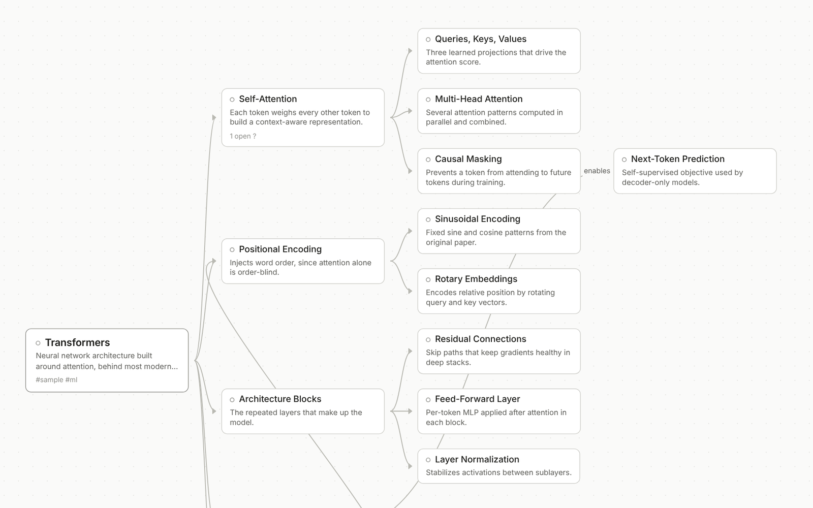
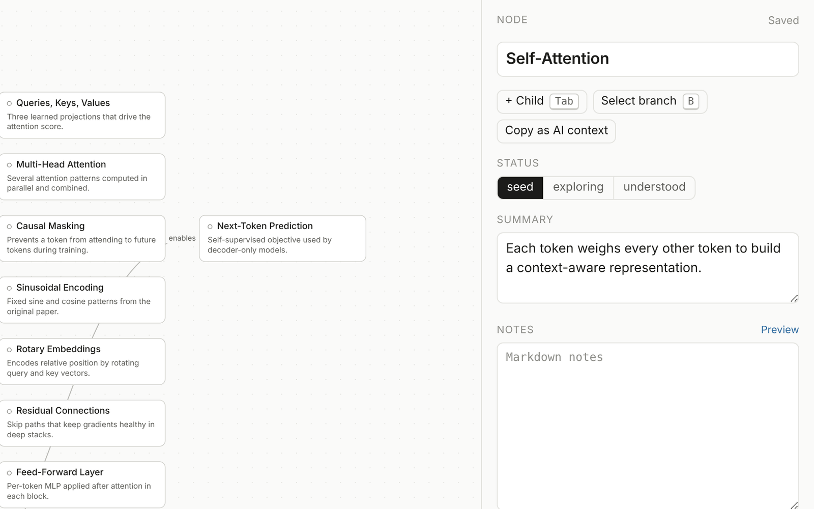
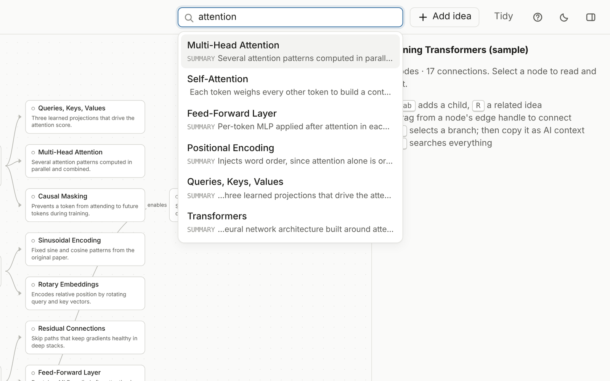

Ideas from long AI conversations vanish into chat history.
What I built
One SQLite store shared by a web app, a REST API, and a stdio MCP server that refuses near-duplicates.
Result
12 MCP tools registered by the stdio server
Try this
Clone it, run it locally, and point an agent at the MCP server.
How it is checked
42 of 42 Unit testsnpm test
12 of 12 MCP server lists all 12 toolsnpm run verify:mcp
What this does not do
Lexical matching only.
No model runs in the browser.
The agent session is recorded, not live.
Problem
A long conversation with an AI model produces good ideas. Then the chat scrolls away and the ideas go with it. Copying them into notes by hand is slow, so most people do not.
Letting an agent write straight into a notes tool has its own problems. It adds the same concept twice under slightly different names. Later nobody can tell which notes a person wrote and which an agent wrote.
I wanted one map that I can edit by hand and an agent can extend, without either one making a mess of the other.
Approach
Living Mindmap is a local app. A React Flow canvas shows the graph. An Express API serves it on loopback only. A separate stdio MCP server gives agents a set of MCP tools over the same data: list and read maps, search, create and update nodes, connect them, attach sources, and export a branch as context.
Both processes open the same SQLite file. The UI polls, so a node an agent adds shows up in an open browser tab a few seconds later.
Two rules keep agent writes honest. create_node rejects near-duplicate titles and returns the candidates, unless the agent passes allow_duplicate: true. Every node written through MCP carries provenance: ai, and the canvas marks it.
Architecture
Two processes, one store, one file. Redrawn from the diagram in the project README.
Decisions
Chose one shared SQLite store over separate data for the UI and the agentbecause two copies drift. With one Store class, the duplicate check and provenance apply to every write, whichever door it came through.
Chose rejecting near-duplicates over merging them silentlybecause the agent gets the candidates back and can decide. An explicit allow_duplicate flag covers the cases where two nodes really should share a name.
Chose provenance on every MCP write over trusting the agent to label itselfbecause the server sets provenance: ai, not the client. A person can see what they did not write.
Chose structured errors over exceptionsbecause an agent can read { error, code, details } and retry sensibly. A crashed stdio server just ends the session.
Chose local-first with no accounts over a hosted demobecause the data is personal notes. The cost is that reviewers have to run it, so the README starts with a short quick start.
Results
12 MCP tools registered by the stdio servernpm run verify:mcp starts the server with a real MCP client and lists the tools.
42 of 42 Unit testsnpm test covers the store, graph layout, context export, REST API, seed data, and the MCP tool handlers through an in-memory MCP client.
1.3 ms median round trip over 160 stdio tool callsscripts/bench.ts starts the real stdio server and runs a scripted task: list, create nodes, read the map back.
Benchmark numbers vary by machine. npm run bench reproduces them.
Screens

The bundled sample map laid out as a tree. Every node is a row in one SQLite file.

The inspector. People edit here and agents edit the same record through MCP.

Search across maps. The MCP tool search_nodes runs the same query.
What I'd do next
Push changes to the UI instead of polling, so agent edits appear at once.
Add an undo for a whole agent session, built on the provenance marks that already exist.
Record a short screen capture of an agent extending a map, since there is no hosted demo.